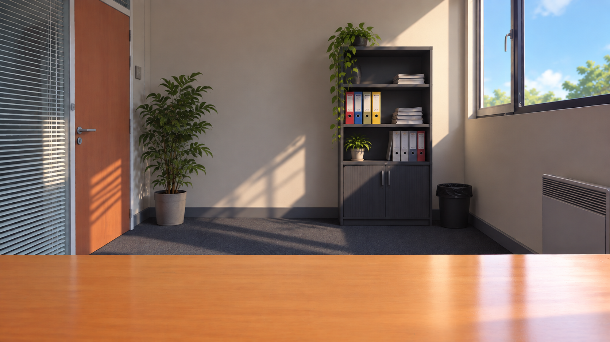
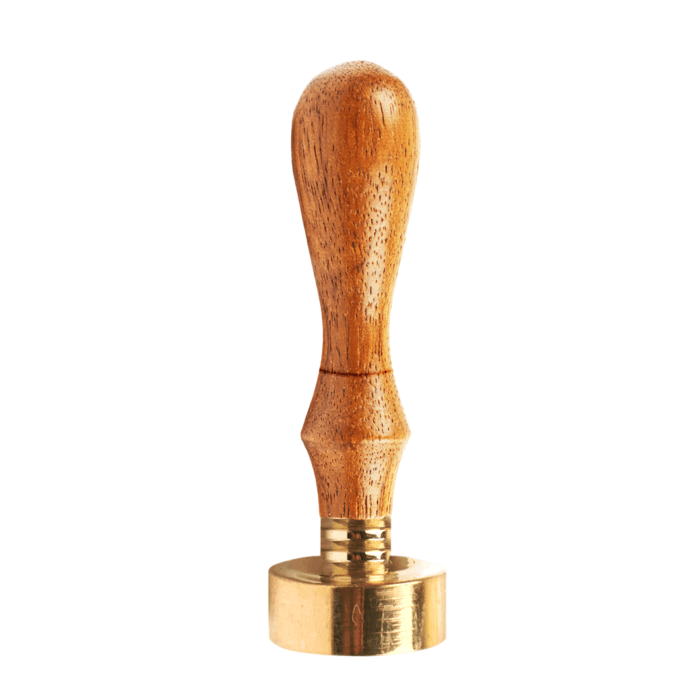

Vous tenez la permanence d'un point-justice. Deux personnes en conflit viennent vous voir.
Écoutez-les, posez-leur des questions, lisez les documents du dossier,
consultez le guide de la résolution amiable, puis orientez-les au bon endroit.
05:00


Poser une question
Les choix des joueurs
Ces choix montrent les avis des joueurs ; ils ne déterminent pas l’orientation la plus adaptée.
Fin de la journée
Choisir une proposition
Choisissez un papier pour le poser sur le bureau, puis tamponnez-le pour retenir cette orientation.